来源：https://jxuhnr0sl8z.feishu.cn/docx/XCSNduej1oRdbZxBUzxc54Brnic
大家好，我是花猫，一个40+的老阿姨，副业摸索5年多，终于在最近有了些许成绩。
公众号流量主文多篇10w+，多篇100w+，一天最高收益1.7万，月入8w+。
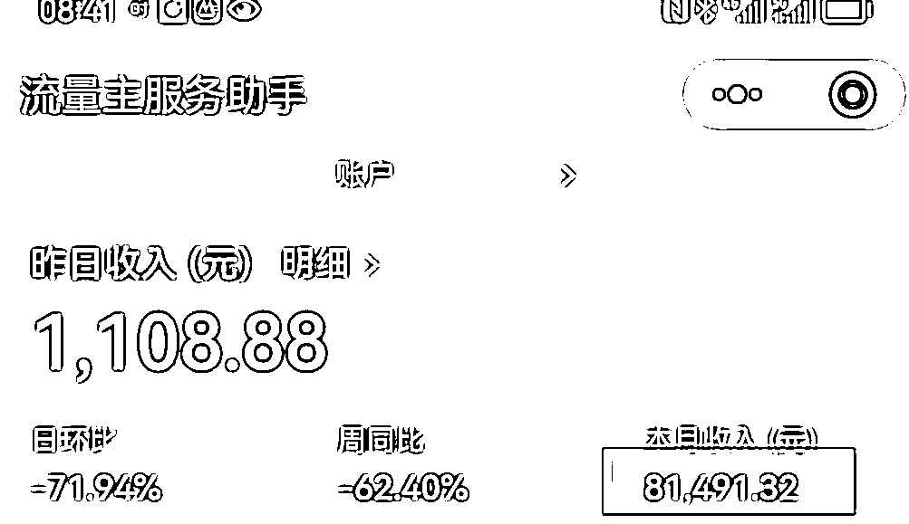
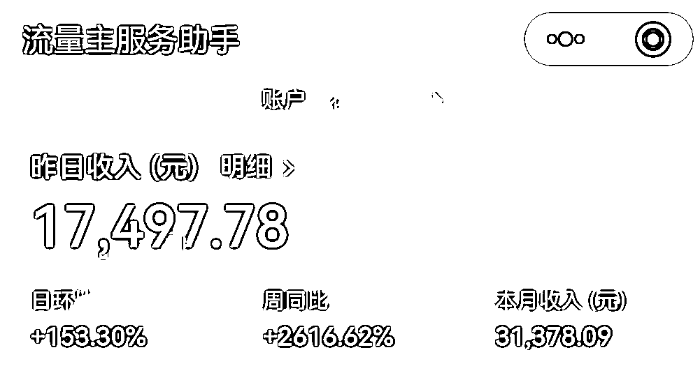
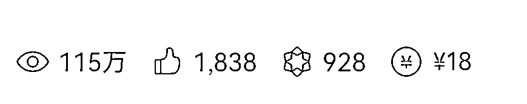
我也终于可以松一口气了，以后我会更加自信，让自卑心理一点一点从我内心去除！
虽然本来我觉得做为女人钱赚的不多，也没啥，但是事实是谁赚钱多，你就是家里的话语权。
我曾经为了生小孩，待在家4年，俗称全职宝妈，过着手心向上的生活。
2021年重返职场，但也只是在老公的公司就业，处理些杂事。
老公是个觉得自己很牛的人，在工作上，一定要听他的，对外人大方，对我并不！
每个月拿着5000的工资，当然一方面也感恩他，毕竟他给了我无忧无虑的生活。
但另一方面，他心里其实蛮看不起我的，觉得我不会赚钱，他经常夸他的婶婶在职场如何如何厉害。
所以问他拿点钱还要看他脸色，我也非常的不甘心。
所以重返职场的同时，我一边帮他打工，一边也寻思自己找点副业。
之前也踩过很多坑，交过很多学费，但无一让我赚到钱的，也许是能力太差也许是机不凑巧。
直至去年，我开启了公众号之路，再次萌发赚钱的想法。
我被一个自媒体人吸引，看着她的普通，却能月入大几万。
我想她能靠着公众号变现，我也可以，就无脑入了她的公众号课程，当时1299的学费。
但事实是去年一年的公众号，我并未靠它实现月入过万，甚至是入不敷出的状态。
我的梦想再次破灭。
我非常地不甘心，我非常地不想放弃！
我想凭什么人家可以成功，我为什么不可以。
难道我真的能力这么差吗？我这么笨吗？我的运气就这么差！
抱着这样的心态，我终究还是坚持下来了。
也幸亏坚持下来了，今年的我不断破圈，不断成长。
终于迎来了我的月入过万，甚至日入过万，所谓努力终将有收获，值得！
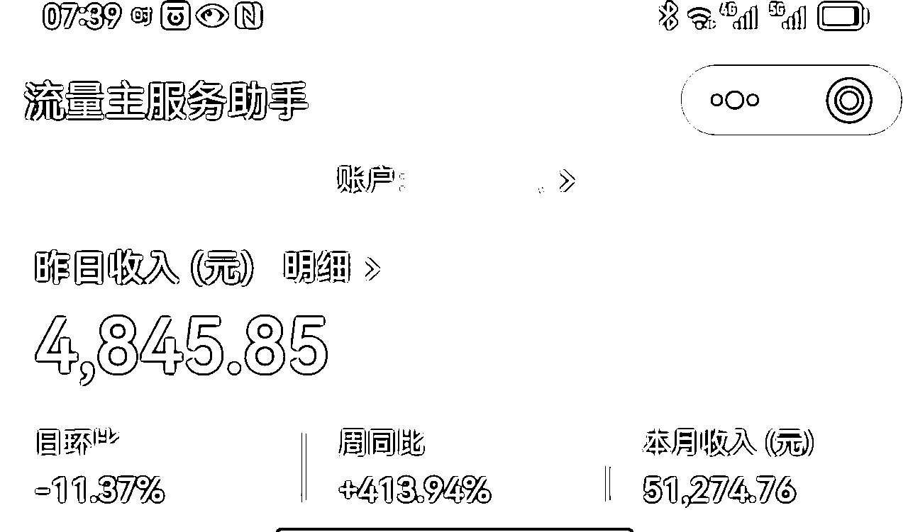
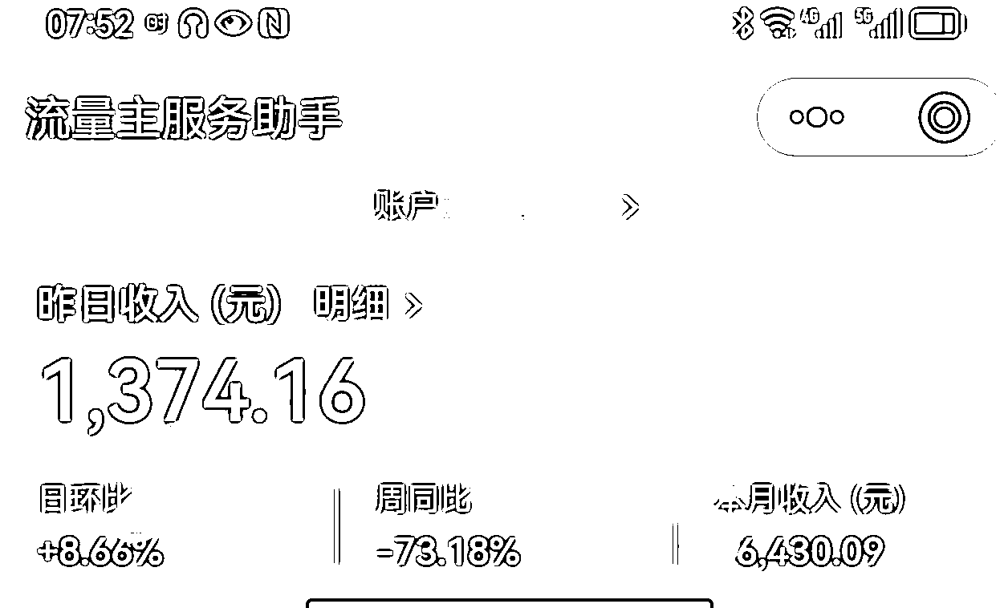
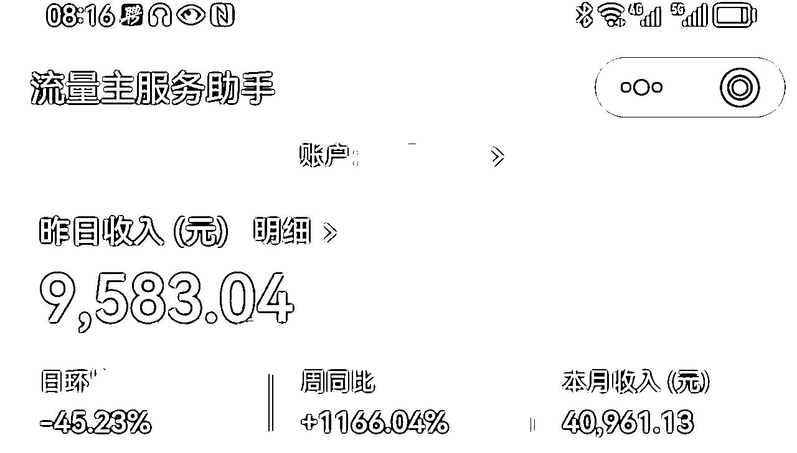
对，就在上个月我的流量主月收益达到了8万，这实在让人惊喜。
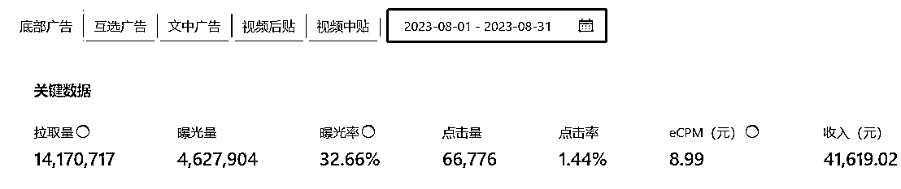
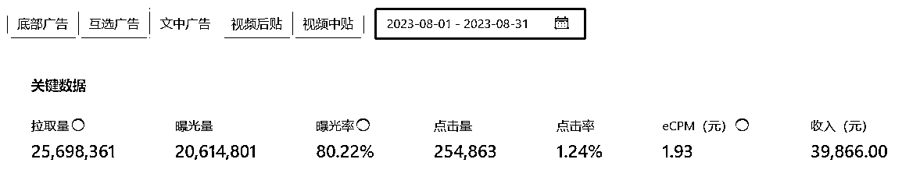
还记得今年年初的我陷入了严重的焦虑中，我也有开始想我要怎么样才能突破我这个状态，也明白公众号还是以内容为王。
但是我也明白以我的能力，我自己是突破不了的，那么怎么办？也许再付费才是更好的选择。
于是我又开始付费，链接到了很多的大佬，他们的社群质量真的太高了，这就有点像薄利多销，或者说同一个时间卖给了一群人。
随着时间的推移，我的成绩就慢慢出来了，时间不负有心人，这句话说的太正确了。
就在6月底我的收入成功过万了，这只是我在一个项目的成绩，再加上分销，加上其他的收入，估计在13000左右。
人都是越努力，幸运就会降临。
我加入合伙人，我也相信这将让我我不断地破圈，我也将收获更多。
但更让我惊喜的是：8月份，我的流量主大爆发，甚至日入5位数了！
这还得从我的今日头条说起。
我很早之前就注册了今日头条，也曾经爆过，但那是日写10篇的情况下。
那时什么都不懂，自己在网上摸索的，看人家说日写10篇，肯定有一篇能爆，就坚持了一个月。
最终放弃了，首先自己本来不擅于写文，本来自己就害怕写文章，虽然是改编别人的，但让我写10篇，我坚持不了，其实是我没懂得爆文的机制。
今年年初，我又看到别人的今日头条课程了，我又被吸引了。因为我相信知识付费是有用的，虽然学费还有点高，记得是799吧，但收益的确也惊人，所以就报名了。
之后跟着课程走，也认真去写文，虽然我还是害怕写作，但为了收益，我也是够拼的，硬是写了。
之后有了一篇爆文，阅读200W+，收益200+。
那个时候的我，对于这样的成绩也很开心，想着学费马上能赚回来了。
可之后的一篇爆文100W+，收益却只有50+，这让我很讶异，这头条单价跌的也太快了，让我有点失望。
但毕竟也是有收益的，所以我继续写，大概还是我领悟太差，之后的爆文很少，收益更可怜。
课程也结束了，也就不好意思再让老师给我指点了。
之后看到亮子老师的头条课，太实惠了，一年才199，我有点死磕，还是想把头条给做起来，所以就毫不犹豫的报名了。
亮子老师的课程再次刷新了我的认知，我立马注销了原来的号。
因为听说今年的头条其实对新号更友好，会扶持。我按照课程的指引，注册新号后，发了一篇文章，效果太好了，一个晚上，阅读3W+，立马500粉就到了，开通了微头条收益。
之后我也换了领域，把发头条的文章也发到公众号和百家，所谓东边不亮西边亮。
大家都在吐槽头条的单价越来越低，有的想改行发视频，收益更高。而公众号，如果进不了流量池，根本就没有收益。没有收益又有多少人能坚持呢？
我能在去年一年公众号收益入不敷出的情况下坚持一年，我想已经是奇迹了，这中间，一起抱团的姐妹，好多都悄无声息的退出了，最后就剩下几个姐妹。
我按照课程教的，标题原则爆文机制等等，以及后来的AI写文，这大大提高了我的写文效率，让我坚持下去的信心更足了。
果真我迎来了我的流量池，我进入了流量池，直接一篇文章20W的阅读，收益1100+。
这对我来说已经是个大爆款了，之后就更加简单了，按照原来的，机械操作就可以。我的收益也基本稳定在日入几百，偶尔来个1000，这样的成绩我非常满足了，毕竟日入几百，一个月下来也有将近1万了。
我更加用心地找爆文，让AI帮我写文，认真排版，认真发文……
没想到惊喜在后面，那天一早打开我的阅读量，我惊呆了！200W+，收益直接6000+
但更让人惊呆的是第二天，阅读400W+，收益1.7万！！！
这公众号流量主也太香了吧，不仅长尾流量香，这大爆款更香！
这爆文太值得搞了吧！
之后我又持续发文，收益基本上每天都上千。
最后8月份结束的时候，月收益达到了8万。
那么我发的这些文为何都爆了呢？我是如何寻找这些素材的？下面分享下找爆文的几个技巧。
爆文顾名思义就是人家写了能爆，你写了也能爆。
真正的爆文就是会有很多人转发，会有很多人给你点赞，也会有很多人给你评论
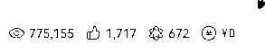
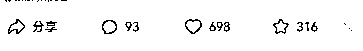
那么什么原因会导致很多人转发，或者给你点赞，忍不住给你评论呢？
比如引起愤怒，引起好感，引起认同，引起大家的某种情绪等等，就是人的喜怒哀乐等等各种情绪。
然后再复制标题看看有没有更多的人来写，是否也爆了
你可能搜索到的素材是那种大V写的，那么大V肯定很容易爆文，和普通人不一样。
你再复制标题看看有没有其他人写，特别是那种新人，如果你也看到新人写了都爆了，那么这条素材可以拿来写。
这些我们都需要经常去看看，找找网感，网感有了之后，你可能看到一条爆文时，你就知道你拿来写能不能爆。
我想这对我来说报了这么多的课程，也是慢慢积累了自己的网感吧。
所以爆文也需要不断去刷文，不断去拆解，不断积累自己的网感！
（咱们都以今日头条为例，公众号不一定每个号都开通留言功能）
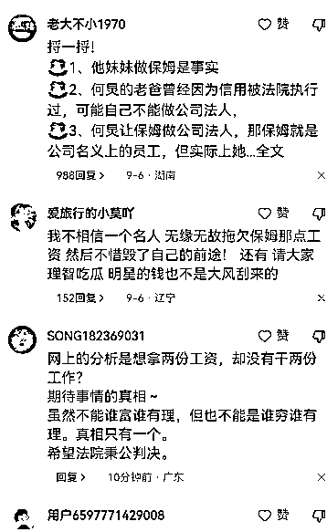
观察读者的情绪指数！有以下3个标准:
a、有没有正反两种观点?
b、有没有统一的情绪，比如: 太棒了！这种人就应该多一些！这种人就应该如何如何！
或者宣扬爱国情绪：中国牛逼！祖国万岁！(建议写正能量的会更好）
c、有没有讲自身的经历，比如: 我也遇见过这种事情！我的家人或者朋友怎样怎样。
如果以上3点占了2点，那么就有爆款的潜质！
社会新闻、娱乐新闻一般的生命周期是6天，过了这个时间，你再怎么写都没有流量!
所以，当事件发生以后，尽快去写！（不过也看号和领域，我的帐号虽然是写娱乐的，但偏向于娱乐情感，写热点新闻不爆）
那么，有些一直爆率高的素材怎么找？ 也就是长期热点。
以下网站是字节跳动的官方网站!
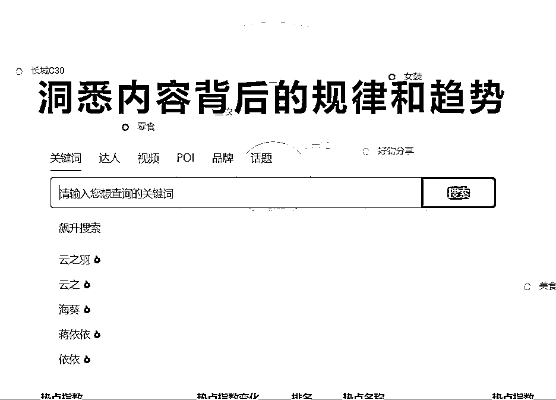
在这个网站可以清楚的看到哪些热门关键词
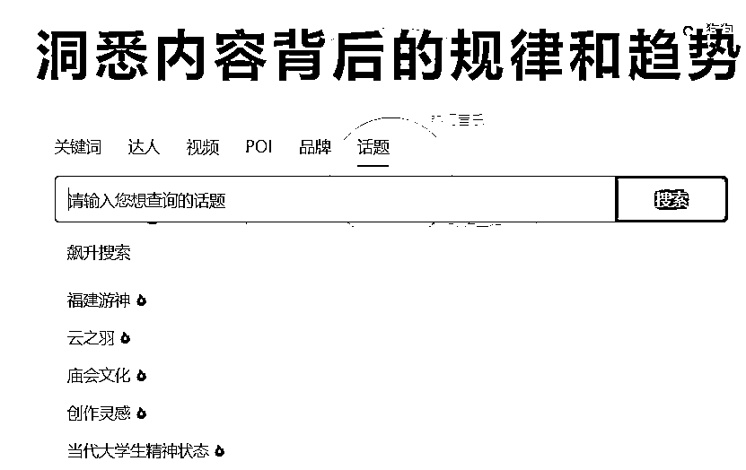
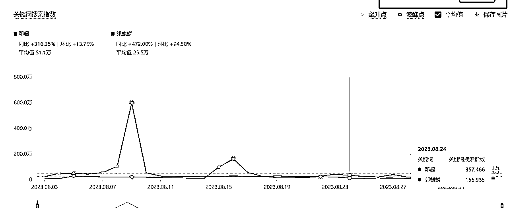
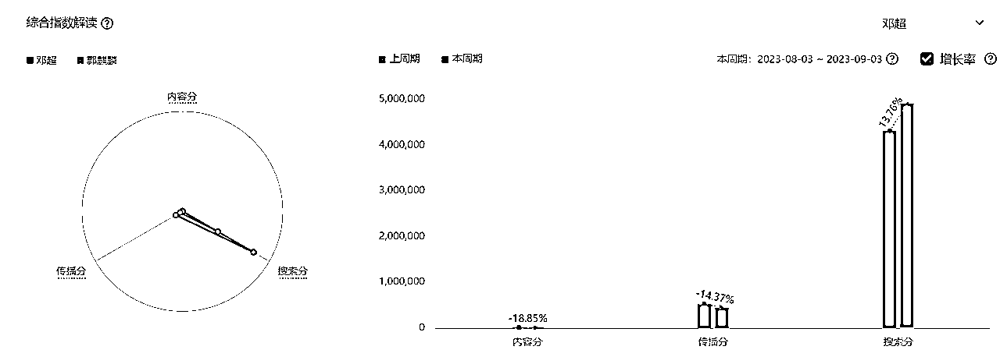
上图是 邓超和郭麒麟的对比，你会写哪个人?
三个数字怎么看?
第一个，内容分，是指大家发的内容增加或减少的比例
第二个，传播分是内容获得播放量
第三个，是搜索人数的增加或减少
我们尽量找，内容减少，传播增加的人物或关键词
实在不行，就是内容减少得多，传播不怎么减少
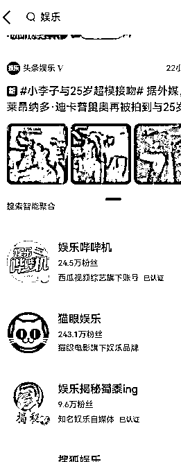
我们以今日头条为例（公众号是私域，且爆文赛道不是太久）
直接以“领域”的关键词来搜索，因为很多帐号为了便于用户找到自己，一般都会在名字上加上和自己领域相关的关键词
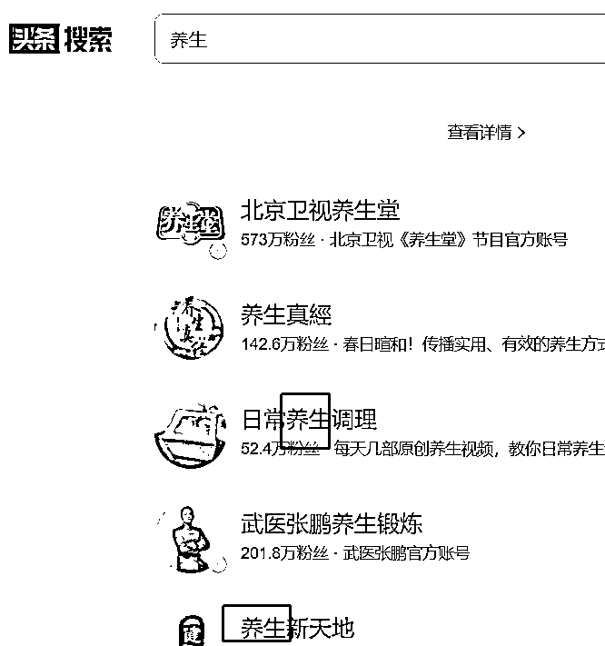
这样我们直接搜索领域关键词很容易找到自己的对标帐号。
我们刚开始爆文写作，不知道怎么去找对标账号，那么我们可以先从自己选择的领域的关键词开始。
比如说你选择的是娱乐领域，那么关键词就是两个字，娱乐，比如说你选择的是社会新闻，那么关键词你可以定义为新闻。
在今日头条搜索框中搜索娱乐两个字，选择用户这个界面，我们就能发现不少的情感账号。
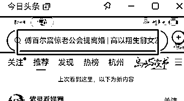
这些都是热门搜索的关键词，进去之后有新闻列表
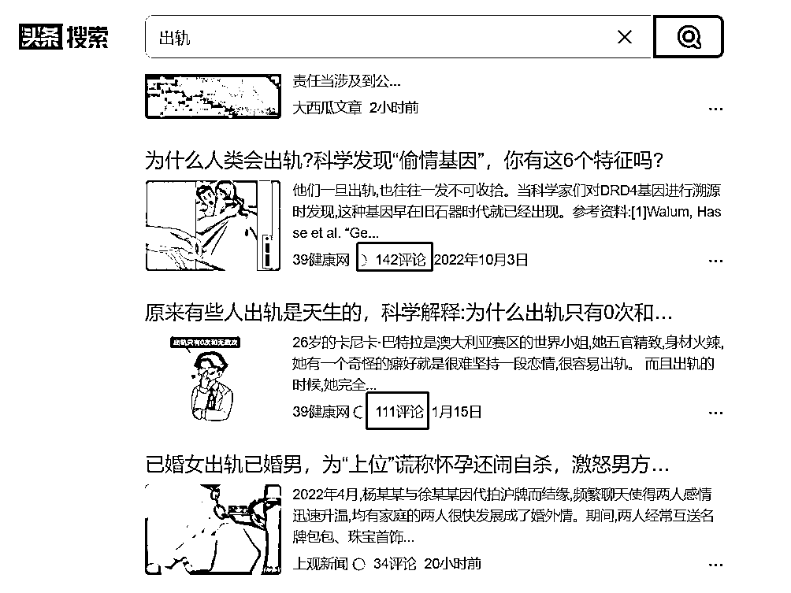
第一、找3万粉丝以下的账号
为什么要找3万粉丝以下的账号? 并且没有加上任何认证标识的账号，因为这说明这些都属于新账号，我们去对标他们更容易出现爆款，而那些粉丝量几百万的账号，他们随便发，阅读量都还不错，所以不是我们参考的主要标准。
第二、更新频率高
简单来说就是这个账号每天都有新更新的文章，因为我们找对标账号的目的就是看他在发什么，然后我们跟着去模仿改编，所以他的更新频率，就好像是给我们输送的写作的弹药一样，更新频率越高，我们获得的素材会越多。
第三、爆文比例超过20%
爆文的比例是说明这个账号写作的质量，他自己找索材的水平的高与低，爆文比例发10篇文章有一两篇能爆，实际上就很不错了。如果们找到20人这样的账号，只针对于爆文进行改编，到我们的素材库也就建立的差不多了。
千万不要被数据所焦虑！
在写爆文的过程中，也有很多伙伴对花猫诉苦，说我很焦虑啊，这每天发文，都没有数据，何时才能入流量池呢？
花猫记得当时发文的时候，压根没想过进流量池，当时就是发到今日头条的同时分发到公众号上。
然后当时还对赛道非常迷茫，弄不好要搞什么赛道，刚开始想过社会文，但感觉自己不太善于追踪热点，然后想着搞情感文的，不过发了几篇效果并不好。
当时知道娱乐流量挺好的，但自己并不对八卦感兴趣。
后来发了几篇，没啥效果，那我就想要不试试娱乐吧。
就发起了娱乐文，没想到发了几篇进了流量池了。
当时发文后我就没去管，因为太多事情了（其实就是时间管理没做好，一直喊着事情太多不过要做的事的确也挺多的）。
所以大家发文后就不要去看数据，专心做其他事情就好，最多你也就早上起来的时候看一眼。
很多事情你越是在乎，结果就并不如你所愿，但你真的放开了，反而有了最好的结果。
我现在就是早上起来的时候看下多少阅读。
如果没阅读，咱们就还是继续发就行了，咱们没道理别人能进，我们就进不了，要对自己有信心。
总的来说，今年是突破的一年，突然之间好像打开了大门，我的努力也得到了反馈。
为了让自己更好的地学习，在老马的推荐下我又毫不犹豫地加入了生财有术。
也想让自己在爆文这个赛道上有更好的成绩，我也加入了航海，去学习更多的内容，也想带动更多的人去写爆文去赚取收益。
之前我都在跌跌撞撞地向前走，但并没有找对方向，也没有任何成绩。
现在回过头去看，我还有点讶异自己是如何坚持下来的，不过也幸亏自己坚持了下来。
前几天还有人跟我说，你是那个“二”！我明白她说我是二八定律中的“二”，的确！我终于成为了那个“二”。
我很庆幸自己没有中途放弃，之前我们一起打斗的姐妹，放弃的人太多了。
当然做的好的也很多，而我是那个走的慢的，也幸亏自己死抠到底了，最终迎来了正反馈！
流量主真的适合每个人去做，像我这种不怎么聪慧的人都可以日入过万，相信你们一样也可以！
如果你坚持不下去了，你就告诉自己一声，再坚持一下，成功已经在向你挥手了，加油哒！
希望咱们可以一起走很久很久，都是这么一点一点坚持过来的！
人们真正注意到你的时候，不是第一眼看到你站在那里，而是发现过了这么久你居然还在那里。
那时你在我在，大家都在！
共勉共勉！一起加油！